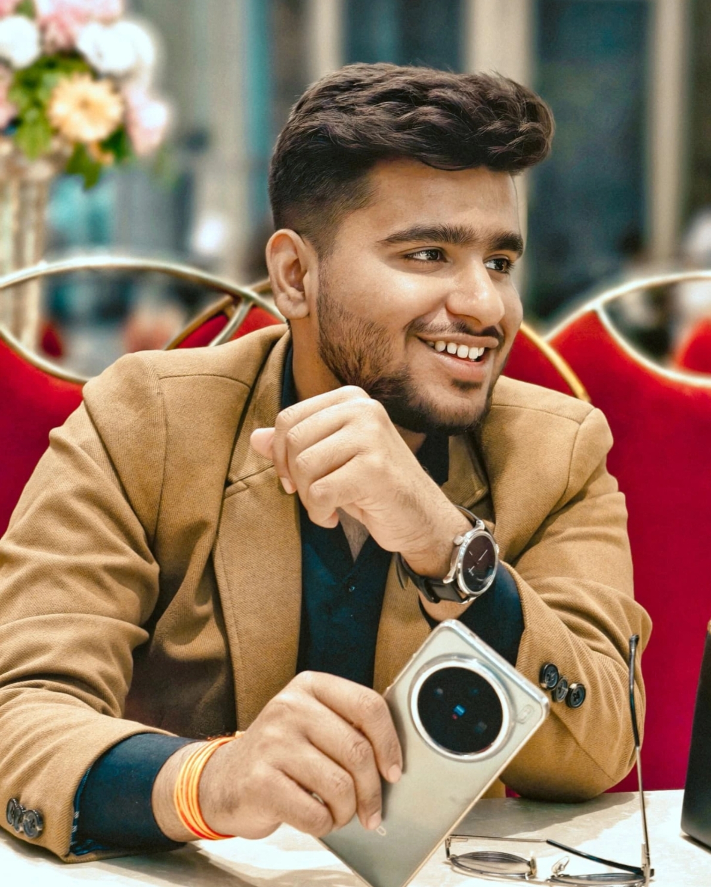
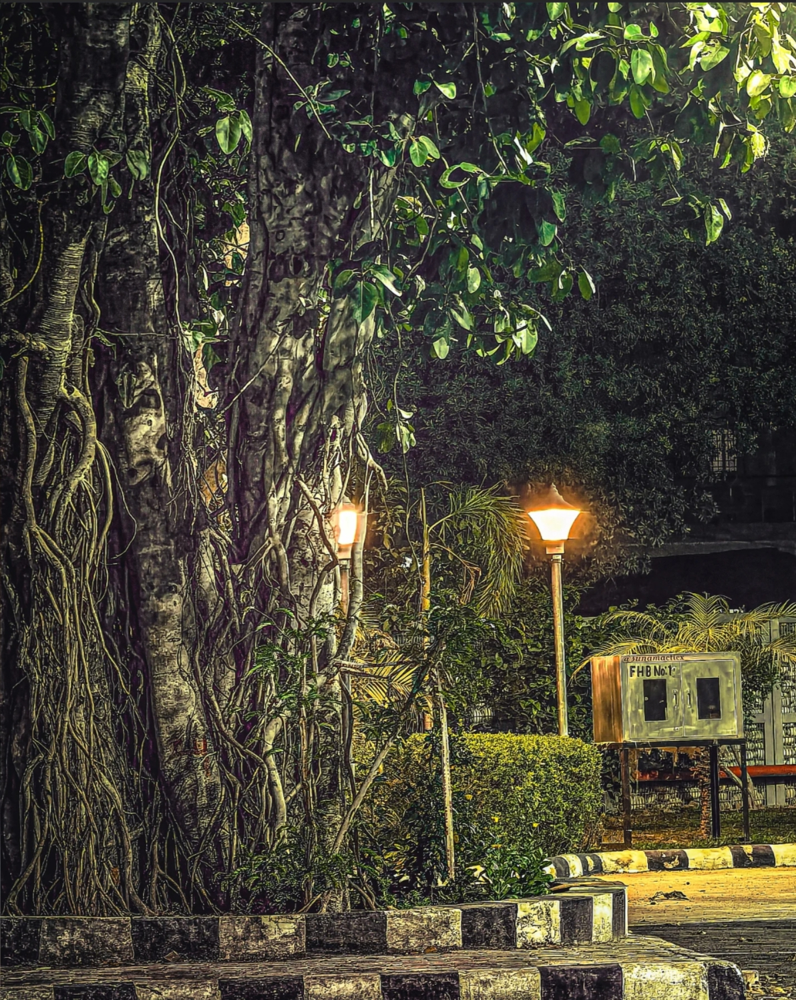
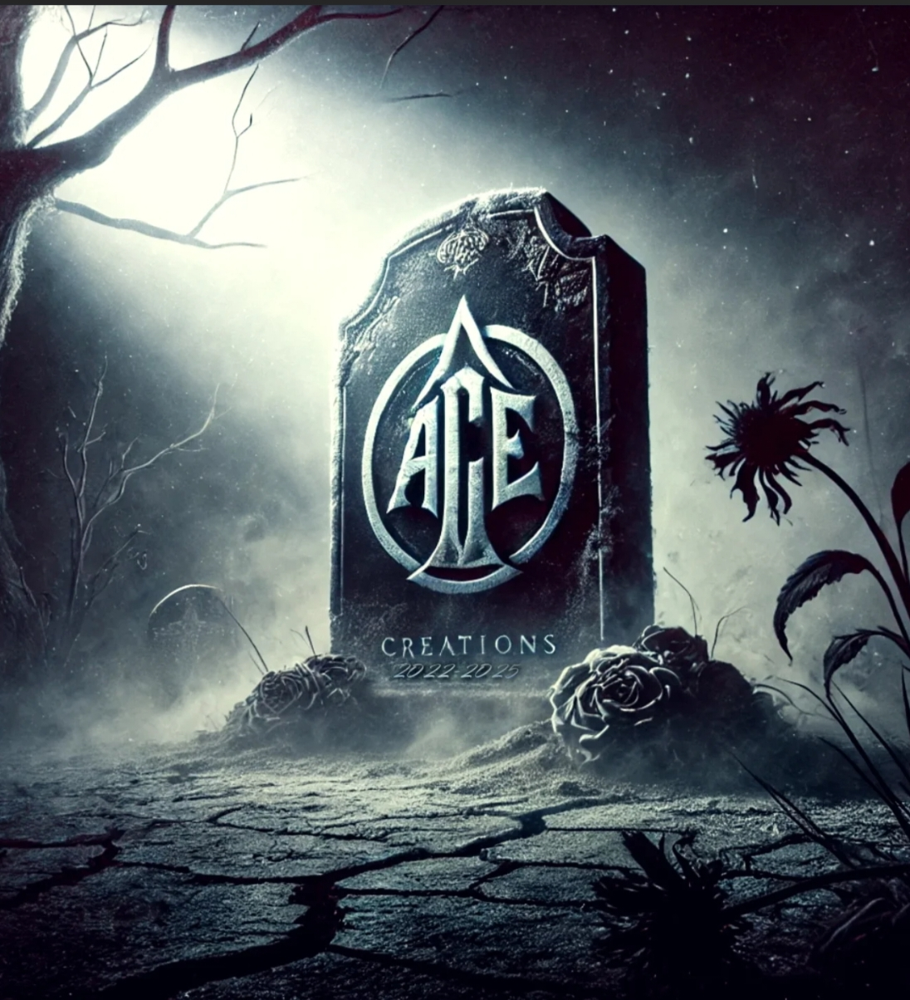

| SURAJ VERMA | |
|---|---|
|  | My name is Suraj Verma. I recently completed my 12th standard in 2024 with good academic performance and have now embarked on a new journey by enrolling in the B.Tech program in Information Technology at the KITE Group of Institutions. I am deeply passionate about technology and currently focused on building a strong foundation in coding and web development, aiming to become a skilled software engineer and web developer in the near future. Although I am currently moving forward in the field of IT, my background and experience are quite diverse and creative. I have spent considerable time exploring video editing, photography, filming, direction, and creating engaging content for platforms like YouTube and Instagram. My creative work includes comedy videos, short reels, and entertainment-based content, where I’ve not only developed technical skills but also sharpened my communication, storytelling, and presentation abilities. These experiences have played a crucial role in shaping my confidence and multitasking skills, making me a versatile individual. I proudly come from Muradnagar, Ghaziabad. My father is a businessman and my mother is a homemaker. They have always supported me in pursuing my interests, whether academic or creative. I believe in continuous learning and self-improvement, which drives me to balance both my technical education and my creative side. Outside of academics and content creation, I am a sports enthusiast. I love watching and playing cricket and enjoy participating in various sports activities that help me stay active and focused. I also enjoy studying and exploring new topics, especially those that challenge my thinking. I consider myself a jack of all trades with a determination to master the skills I am most passionate about. With a strong blend of creativity and technical ambition, I am confident that I can grow into a well-rounded professional who brings both innovation and energy to any field I choose to work in. |
I am Suraj Verma, a calm and focused individual who believes in doing things with clarity and purpose. While I see myself as an average person, people often compliment my personality and appearance, which I humbly accept. My mindset is cool and composed—I don’t panic easily, and I prefer to approach tasks with a sense of structure and logic. Whether I’m working on a technical problem or a creative idea, I like to sort things out and move step by step. I have a wide range of interests that reflect my curiosity and enthusiasm for learning. I enjoy playing cricket, coding, filmmaking, video editing, and even exploring the basics of trading. I’m currently a beginner in many of these fields, especially in blending creativity with technology, but I’m excited about the journey and the potential it holds. My learning approach is simple yet effective—I learn best through stories. If I find something difficult or dull, I create a story around it to make it interesting and easier to understand. I deeply value the blessings of God and the support of my parents, and my biggest goal is to make them proud and give them the comfort and success they truly deserve. I aim to become a skilled software engineer and a capable web developer while continuing my passion for filmmaking and content creation alongside. My vision is not overly complicated—I want to build a meaningful life by combining the things I love and using them to create something valuable. In my free time, I usually engage with filmmaking—whether it’s learning new editing techniques or understanding how stories are told visually. I may not know everything right now, but I have the drive, focus, and heart to grow into the person I aim to become.
Although I’m currently pursuing my B.Tech in Information Technology at KITE Group of Institutions, my journey with practical skills began much earlier through hands-on creative work. I have a background in video editing, filmmaking, content creation, and photography, which has allowed me to understand storytelling, visual design, and audience engagement from a young age. I’ve created and edited comedy videos, YouTube content, Instagram reels, and short films—handling everything from scripting and direction to shooting and post-production. These experiences have not only helped me develop technical skills in tools like video editing software (such as Adobe Premiere Pro, VN, CapCut, etc.) but also sharpened my communication, problem-solving, and time management abilities. In addition to my creative work, I’ve now shifted focus toward coding and web development, learning programming languages, front-end technologies like HTML, CSS, and JavaScript, and gradually working toward full-stack development. I actively practice through small personal projects, online tutorials, and practical assignments, building a strong base for my future career as a software engineer and web developer. My experience is not defined by job titles but by real-world skills and consistent learning. I believe in growing step by step—combining creativity with technology, and building a career that aligns with both passion and purpose. I'm open to internships, freelance projects, and collaborative work that allows me to apply what I know and keep improving.
GOLICHOTS is a small YouTube channel that creates comedy skits, spoofs, and fictional stories rooted in local culture. With just 10 videos and 280 subscribers, the channel has shown potential through popular uploads like the *RRR Spoof* and *Pilu Baba 2*. Focused on youthful, relatable entertainment, GOLICHOTS blends humor and drama in a homemade style, appealing to a regional audience.
|  |  |
I’ve always been fascinated by how technology powers the world. While I started with a creative background in filmmaking and video editing, I realized I also enjoy building things logically. Software engineering gives me the opportunity to blend creativity with logic and solve real-world problems.
Yes, I’m currently learning coding and web development as part of my B.Tech IT program. I’ve also been building my own mini projects and practicing regularly to strengthen my skills.
My experience in filmmaking, video editing, and storytelling helps me think creatively while designing websites or solving technical problems. It also enhances my understanding of user experience and visual aesthetics.
I’m interested in both technical and creative projects—especially those that involve front-end web development, creative design, or even content production like YouTube videos, reels, and short films.
My long-term goal is to become a successful software engineer and web developer, while continuing to pursue my passion for filmmaking and content creation. I also want to make my parents proud and give them a life of comfort.
© 2025 SURAJ VERMA. All Rights Reserved.